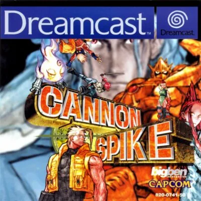

Dreamcast
Cannon Spike
- Año: 2002
- Desarrollador: Psikyo
- Género: Disparos / A pie
- Jugadores: 2 jugadores
Cannon Spike es un juego de acción y disparos multidireccional de Psikyo, publicado por Capcom en 2000 para recreativas y después para Dreamcast. Se parece a juegos como Smash TV y Captain Commando, pero se centra mucho más en los disparos y en los combates contra jefes. Fue uno de los últimos juegos de Dreamcast en Europa: lo distribuyó Virgin Play y solo se vendió en tiendas pequeñas, así que enseguida se convirtió en una pieza de coleccionista.
Cannon Spike es el nombre de una de las técnicas más conocidas de Cammy, luchadora de Street Fighter y una de las protagonistas del juego: una patada que sube de abajo arriba.
Controles
que el personaje se mueva con el joystick (palanca analógica; si no responde, pasarlo a cruceta). Según las guías: B disparo ligero, Y disparo fuerte, A golpe ligero, X golpe fuerte, R fija un blanco y L lanza el ataque especial. Que el J2 entre con 2P. ¿Va fluido?
Mando de Dreamcast: los botones son los mismos en todos los juegos (reicast no los cambia por juego). Los colores son los del mando original.
| Panel | Juego |
|---|---|
 | Mover (palanca analógica) |
 |  A A |
 |  B B |
 | Gatillo derecho |
 |  X X |
 |  Y Y |
 | Gatillo izquierdo |
 | Start |
 | Salir del juego |
El panel en Dreamcast


Argumento
Recopilado de internet (2026-11-05). Lo marcado con ⚠️ no está probado en la bartop.
En un futuro sin fecha (el año 20XX), una gran crisis económica sacude el planeta y aparecen por todas partes robots terroristas que siembran el pánico. Para devolver el orden se forma un grupo de élite, una fuerza especial antirrobots, equipado con un arsenal enorme y con las Motor Boots, unas botas-patín a propulsión para deslizarse por el campo de batalla.
Sus miembros vienen de otros juegos de Capcom: Cammy y Charlie (Street Fighter), Arthur (Ghosts 'n Goblins, aquí dentro de un gran traje robótico), Shiba Shintaro (Three Wonders), Simone (personaje nuevo, parecida a Linn Kurosawa de Alien vs. Predator) y, como personajes secretos, B.B. Hood (Darkstalkers) y Mega Man.
Los enemigos principales son el Balrog de Street Fighter (el que en Occidente se llama Vega), que aparece dos veces (Fallen Balrog y Revenger Balrog); Kabuki, también dos veces (la Flying Fortress y su forma Revenger con ametralladoras en los brazos); Cat Lady Beauty, una asesina con dos lobos que se transforma en bestia; y el jefe de los terroristas, Psychiccer Sting.
Final: el último enemigo es Psychiccer Sting. Al romper sus armaduras crea tres copias de sí mismo y solo una de las cuatro recibe daño. Al vencerlo, cada personaje tiene su propio final con ilustraciones, y a dos jugadores hay finales distintos para cada pareja.
Jugabilidad
Recopilado de internet (2026-11-05). Lo marcado con ⚠️ no está probado en la bartop.
- Estructura: un juego de disparos con vista desde arriba, en pantallas cerradas, para uno o dos jugadores a la vez. Es casi una sucesión de combates contra jefes: en cada fase primero hay oleadas de enemigos, luego un jefe intermedio con más enemigos y al final el jefe de la fase (ver «Guía de niveles»). Es corto: una partida completa dura entre 10 y 15 minutos.
- Personajes: siete, cada uno con sus disparos y golpes propios (los golpes de Cammy y Charlie son los de Street Fighter). Al empezar se puede elegir entre cinco; B.B. Hood y Mega Man son secretos.
- Disparo y golpe: el disparo ligero es rápido pero flojo, y el fuerte deja al personaje un momento parado. Los golpes cuerpo a cuerpo suelen hacer más daño: atacar de cerca con ellos es una buena táctica.
- Fijar un blanco: el botón de marcar fija a un enemigo durante unos cuatro segundos para poder moverse disparándole; luego hay que volver a fijarlo.
- Especiales: disparo + golpe a la vez lanza un especial a distancia; marcar + golpe, uno cuerpo a cuerpo; los tres botones a la vez, el súper especial, que gasta una ficha especial. Se empieza con cinco y en cada fase sale al menos una más; conviene guardarlas para los jefes.
- Dos jugadores: el segundo entra pulsando Start. Si cae un compañero, deja una ficha especial.
Botones según las guías (⚠️ por confirmar)
| Mando de Dreamcast | Panel | Acción |
|---|---|---|
| Palanca o cruceta | | Moverse |
| A | | Disparo ligero · aceptar en los menús |
| B | | Golpe ligero · volver en los menús |
| X | | Disparo fuerte |
| Y | | Golpe fuerte |
| Gatillo L | | Ataque especial |
| Gatillo R | | Fijar un blanco |
| Start | | Pausar · entrar como jugador 2 |
Guía de niveles
Recopilado de internet (2026-11-05). Lo marcado con ⚠️ no está probado en la bartop.
- Cada fase es una pantalla grande con tres partes: oleadas de soldados y robots, un jefe intermedio (desde un helicóptero hasta un gorila zombi) y el jefe de la fase, que dispara lluvias de balas al estilo de los matamarcianos de Psikyo.
- ⚠️ No he encontrado la lista de fases en orden. Lugares que nombra Hardcore Gaming 101: la estación deshabitada (Uninhabited Station), la entrada a la Geofort (Geofort Entrance), una mansión al estilo de Resident Evil con perros zombis (Unholy Dwelling), la ciudad ocupada (Occupied Town), la ciudad arrasada (Perished Town) y una mina abandonada.
| Jefe | Cómo es |
|---|---|
| Fallen Balrog y Revenger Balrog | Balrog con dos garras; salta (Sky High Claw) y lanza cuchillos en abanico |
| Cat Lady Beauty | Asesina con un rifle y dos lobos; al vencerla se convierte en una bestia que dispara por la boca |
| Kabuki (Flying Fortress y Revenger) | Primero dispara desde una nave flotante; después, con ametralladoras gigantes en los brazos |
| Psychiccer Sting (jefe final) | Muy ágil; tras romperle las armaduras crea tres copias: hay que dar con la verdadera |
Fuentes
Objetos
Recopilado de internet (2026-11-05). Lo marcado con ⚠️ no está probado en la bartop.
| Objeto | Qué hace |
|---|---|
| Ficha especial | Permite el súper especial (los tres botones a la vez). Se empieza con cinco; la sueltan algunos enemigos y siempre el compañero que cae |
⚠️ Las fuentes no detallan más objetos.
Fuentes
Trucos y secretos
Recopilado de internet (2026-11-05). Lo marcado con ⚠️ no está probado en la bartop.
Secretos
- Personajes secretos: B.B. Hood y Mega Man. ⚠️ Las fuentes no dicen cómo se desbloquean.
- Galería: al terminar el juego una vez se abre una galería con ilustraciones y bocetos oficiales.
- Traje alternativo: el uniforme de Cammy de Street Fighter Alpha está escondido en el juego (⚠️ no dicen cómo sacarlo).
- Finales a dos jugadores: cada pareja de personajes tiene su propio final.
Fuentes
Longplay

Partida completa de la versión Dreamcast con los siete personajes (113 min), de WindyCornerTV: Cannon Spike (Dreamcast) Longplay - All Seven Characters.
Pulsa el minuto de un nivel para ver el vídeo desde ese punto.